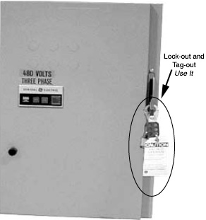

Operating Documentation
Direction 2378260-800, Rev# 10
GOC3 Service Methods (Adv)
Operating Documentation |
| Potential for Data Loss and/or Equipment Damage. To prevent potential data loss and equipment damage, please do the following:
| |
| NOTE: | Before you start the installation, make sure the site preparation complies with conditions and instructions found in the pre-installation information. Failure to comply will result in excessive installation delay and potential increased, unrecoverable installation costs. This product is designed to meet specific mechanical installation standards, which should be reviewed prior to installing this system. |
This module describes the requirements for installing the GOC3 Console. It consists of the following sections:
Training (Section 2.1)
Tools (Section 2.2)
Delivery and Inventory Procedure (Section 2.4)
Power Down and Lock-Out Tag-Out (Section 2.5)
Only people experienced and trained in the installation process of a GE CT Scanner should perform the work described in this document. A person doing the installation should have:
Installed a GOC 1 or GOC 2 console.
Completed three LightSpeed Ultra 4 or 8 or 16 CT installations as a helper, prior to leading an installation. Installation leader must have completed project management, leadership training, and completed all required training prior to becoming a project leader.
Reviewed the LightSpeed Installation Video, Safety Video, Installation Training CD, and successfully passed all related tests. (Refer to Table 1.) New installation training materials to be available in 4Q03.
Table 1: Installation and Training Media
| Media | Part Number |
| LightSpeed Installation CD | 2289471-100 |
| LightSpeed Installation Video | 2289468-100 |
| LightSpeed Installation Training CD | 2289779-100 |
| GE Safety CD | 2290198-100 |
| GE Safety Video | 2290199-100 |
A working understanding of the mechanical installation process, prior to beginning.
Completed environmental health and safety (EHS) training, understand and apply lockout/tagout processes, completed Hazcom training, completed Eye & Personal Protection Safety, and have taken Blood Borne Pathogens training.
All mechanical vendor training and records must be verifiable and submitted to GEMS.
Mechanical vendors shall be responsible for training all employees involved in the installation of GEMS CT products.
It is the mechanical vendors responsibility to require and monitor that all of the above safety requirements are maintained and met on installation sites.
Mechanical vendor installation teams must have basic measurement skills, system layout skills, and the ability to read and understand blue prints. Must have professional communication skills needed to communicate with customer any changes or additional requirements needed to complete the installation project.
The common tools and supplies listed within this section are required for installation of the console.
Standard and Metric combination wrench sets
Standard and Metric Hex Key (Allen wrench) sets
Phillips screwdriver (medium)
Straight blade screwdriver set (small and medium)
Diagonal cutting pliers, small
DVM
Safety shoes *
Safety glasses *
LOTO kit (supplied)
* These PPE items are absolutely required for every installation job, with NO exceptions
| NOTE: | A box labeled Installation Support Kit is shipped with each system. It contains paint, masking tape, cleaners, towels, and materials needed to install this CT scanner. |
Upgrade to GOC3:
Mechanical - 2 hours without the new power cable/ 4 hours with the new power cable.
Electrical - 2.5 hours without Load from Cold, 4 hours with the Load from Cold.
System install: Mechanical install time is approximately 2 hours.
Save Everything.
Save State.
Note tube counter and gantry rotations counter.
Complete ALL Information forms.
Remove ALL customer information, including images -- Clear the Disk!
When transporting the CT system, ensure that the system is not exposed to temperatures or humidity outside the following specifications.
Temperature: 0º to +120º F (-18º to +49º C)
Humidity: 20% to 80%
| Component Freezing occurs if CT system is exposed to temperatures below
0º F (-18º C) for a period longer than two days. Allow a minimum of 12 hours for the CT system to adjust to ambient room temperature, prior to installation. | |
Follow the instructions provided by your installation specialist regarding working with equipment movers. Help direct movers on where to place equipment and which items you need first.
Generally movers should move all equipment into the customer room. Door removal and other site changes to move equipment should be done only as directed by the install specialist.
For component sizes and weights, refer to the appropriate Pre-Installation Manual.
Check for the following damage, which may have occurred during shipping:
Equipment damage: paint scrapes and cover damage.
Damage to hospital property: floors, door frames and walls.
If damage is found - or items are missing in shipment - notify the appropriate service personnel:
For item(s) missing in shipment or short shipped, contact the install specialist to have the item(s) shipped.
Report damaged items to:
(800) 548-3366, Option 8 - Bill Kennedy, or
(262) 544-3744 - John Carini, CT Manufacturing, John.Carini@med.ge.com.
Four items:
Skid with Console
SCSI Tower
Software
Options
Before powering down the system, ensure you have completed all the tasks in Section 2 of the appropriate one of the following modules:
Power down the system.
Lock-out and tag-out the A1 breaker as shown in Illustration 1.
Illustration 1: Sample A1 Breaker
